More about UML
Unified Modeling Language
UML is not a programming language. It’s a graphical notation for drawing diagrams to visualize object oriented systems.
UML includes over a dozen different types of structural and behavioral diagrams.
UML has been marketed for many contexts.
Some problems (Wikipedia):
It has been treated, at times, as a design silver bullet, which leads to problems.
UML misuse includes overuse (designing every part of the system with it, which is unnecessary) and assuming that novices can design with it.
It is considered a large language, with many constructs. Some people feel that the size of UML hinders learning (and therefore, using) it.
“These diagrams should be a quick, useful communication tool. A support system for your brain, not the other way around!”
First iteration in planning can be paper or whiteboard Then there are benefits with digital tools
Building blocks
Things
Structural
Class
Interface
collaboration
use case
component
node
Behavioral (dynamic)
interaction
state machine
Grouping
packaging
Annotational
Note
Relationships
Dependency
association
generalization
realization
Diagrams
Structure
Class
Component
Object
Composite structure
Package
Deployment
Behavior
Use case
Activity
State machine
Interaction within/outside system
Sequence
Communication
Timing
Interaction overview

Class
A diagram that shows the system classes and relationships between them.
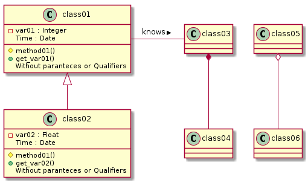
@startuml
class01 <|-- class02
class03 *-- class04
class05 o-- class06
class01- class03 : knows >
class class01 {
-var01 : Integer
Time : Date
#method01()
+get_var01()
{method}Without paranteces or Qualifiers
}
class class02 {
-var02 : Float
Time : Date
#method01()
+get_var02()
{method}Without paranteces or Qualifiers
}
@enduml
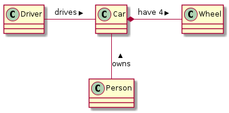
@startuml
class Car
Driver - Car : drives >
Car *- Wheel : have 4 >
Car -- Person : < owns
@enduml
Sequence
A diagram that shows the existence of Objects over time, and the Messages that pass between those Objects over time to carry out some behavior.
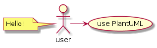
@startuml
user -> (use PlantUML)
note left of user
Hello!
end note
@enduml
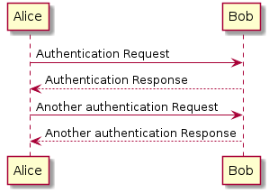
@startuml
Alice -> Bob: Authentication Request
Bob --> Alice: Authentication Response
Alice -> Bob: Another authentication Request
Alice <-- Bob: Another authentication Response
@enduml
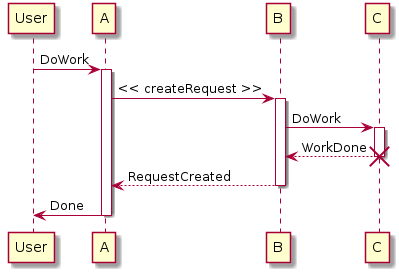
@startuml
participant User
User -> A: DoWork
activate A
A -> B: << createRequest >>
activate B
B -> C: DoWork
activate C
C --> B: WorkDone
destroy C
B --> A: RequestCreated
deactivate B
A -> User: Done
deactivate A
@enduml
Activity
A flowchart that shows the process and its correlating decisions, including an algorithm or a business process.
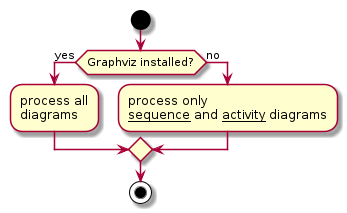
@startuml
start
if (Graphviz installed?) then (yes)
:process all\ndiagrams;
else (no)
:process only
__sequence__ and __activity__ diagrams;
endif
stop
@enduml
Syntax for algorithm flowchart
Start and stop
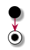
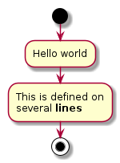
What’s this?
Computation
Input output
Choice
Direction of program flow Iterative or counting loop
Other
Use case
A diagram that shows relations between Actors and Use Cases.
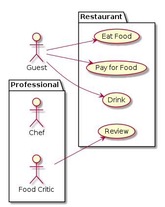
@startuml
left to right direction
actor Guest as g
package Professional {
actor Chef as c
actor "Food Critic" as fc
}
package Restaurant {
usecase "Eat Food" as UC1
usecase "Pay for Food" as UC2
usecase "Drink" as UC3
usecase "Review" as UC4
}
fc --> UC4
g --> UC1
g --> UC2
g --> UC3
@enduml
Object
Object diagrams are derived from class diagrams so object diagrams are dependent upon class diagrams.
Object diagrams represent an instance of a class diagram. The basic concepts are similar for class diagrams and object diagrams. Object diagrams also represent the static view of a system but this static view is a snapshot of the system at a particular moment.
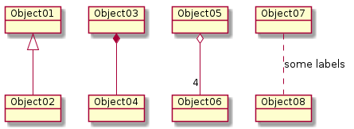
@startuml
object Object01
object Object02
object Object03
object Object04
object Object05
object Object06
object Object07
object Object08
Object01 <|-- Object02
Object03 *-- Object04
Object05 o-- "4" Object06
Object07 .. Object08 : some labels
@enduml
Component
A diagram that shows relations between various Components and Interfaces.
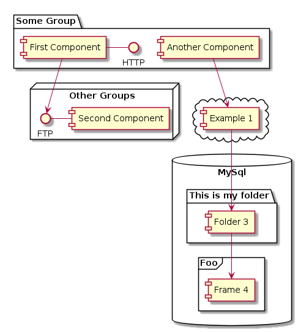
@startuml
package "Some Group" {
HTTP - [First Component]
[Another Component]
}
node "Other Groups" {
FTP - [Second Component]
[First Component] --> FTP
}
cloud {
[Example 1]
}
Deployment
A diagram that shows relations between various Processors.
Deployment diagrams are used to visualize the topology of the physical components of a system, where the software components are deployed.
Deployment diagrams are used to describe the static deployment view of a system. Deployment diagrams consist of nodes and their relationships.
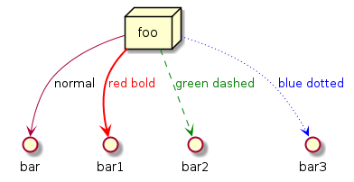
@startuml
node foo
foo --> bar : normal
foo --> bar1 #line:red;line.bold;text:red : red bold
foo --> bar2 #green;line.dashed;text:green : green dashed
foo --> bar3 #blue;line.dotted;text:blue : blue dotted
@enduml
State
A diagram that shows States of a system or subsystem, Transitions between States, and the Events that cause the Transitions.
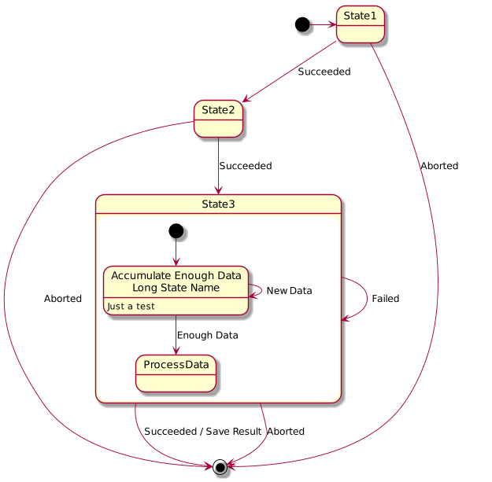
@startuml
scale 600 width
[*] -> State1
State1 --> State2 : Succeeded
State1 --> [*] : Aborted
State2 --> State3 : Succeeded
State2 --> [*] : Aborted
state State3 {
state "Accumulate Enough Data\nLong State Name" as long1
long1 : Just a test
[*] --> long1
long1 --> long1 : New Data
long1 --> ProcessData : Enough Data
}
State3 --> State3 : Failed
State3 --> [*] : Succeeded / Save Result
State3 --> [*] : Aborted
@enduml
Timing
show timing constraints of a system in a given time frame
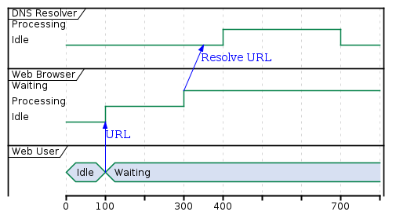
@startuml
robust "DNS Resolver" as DNS
robust "Web Browser" as WB
concise "Web User" as WU
@0
WU is Idle
WB is Idle
DNS is Idle
@+100
WU -> WB : URL
WU is Waiting
WB is Processing
@+200
WB is Waiting
WB -> DNS@+50 : Resolve URL
@+100
DNS is Processing
@+300
DNS is Idle
@enduml
Syntax
https://plantuml.com/
Test yourself!
Look at the source files of this material.